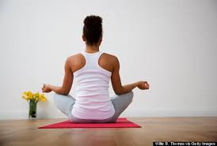

Stress relief tips
Here are five tips that can help you relieve stress on a daily basis.

Take a break from what you're doing
Maybe it's hard to get away from a big work project, a crying baby or a growing credit card bill. But give yourself permission to step away from it for a short time. Don't avoid your stressors (those bills have to be paid sometime), but take a few minutes for yourself.

Exercise on a regular basis
Exercise is a huge part of being healthy, and it benefits your mind as well as your body. It doesn't have to be an hour a day; even a 20-minute walk in the midst of a stressful time can give you an immediate effect that can last for several hours.
Take time to smile and laugh

When people are stressed, they often hold a lot of the stress in their face. Laughs and smiles can help relieve some of that tension and improve the situation. And if you share your smile with someone else, it will them release some of their tension too!
Get support from family and friends

Call a friend, send an email. Sharing your concerns does help relieve stress. But pick a person who you feel can understand you. If your co-workers are the stressors, it probably won't alleviate your stress if you share your worries over credit card bills with one of them.
Meditate
Meditation helps the mind and body to relax and focus. When meditating, people can release emotions that may have been causing the body physical stress. Research has shown that even meditating briefly can reap immediate benefits.